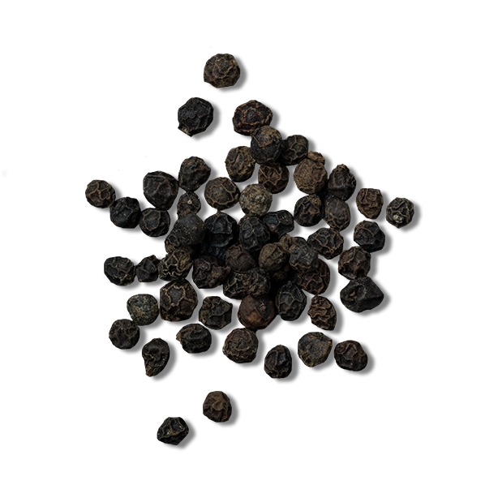

Piper nigrum
Overview
Black pepper, scientifically known as Piper nigrum, is one of the most widely used and versatile spices in cuisines around the world. Originating from the Malabar Coast of India, black pepper has a long history dating back thousands of years, prized for its pungent flavor and aromatic qualities. Today, it is cultivated in tropical regions across Asia, Africa, and Latin America. The spice is derived from the dried berries of the pepper plant, which are harvested at different stages of ripeness to produce various types of pepper, including black, white, and green. Black pepper is renowned for its bold, peppery flavor with subtle heat, making it a staple ingredient in seasoning blends, marinades, sauces, and culinary dishes of all kinds.
Cultural Overlap
Black pepper's journey from its origins in India has led to its widespread adoption and integration into cuisines across the globe. Its introduction to Europe during the Middle Ages sparked a culinary revolution, transforming bland medieval fare into flavorful dishes enjoyed by nobility and commoners alike. The spice trade routes of the ancient world facilitated the exchange of black pepper along with other prized commodities, shaping cultural exchanges and influencing culinary traditions. Today, black pepper remains a ubiquitous ingredient in diverse cuisines, symbolizing the interconnectedness of cultures and the rich tapestry of flavors that define global gastronomy. Whether used as a humble seasoning or a key component in gourmet dishes, black pepper continues to play a vital role in culinary heritage and culinary innovation worldwide.